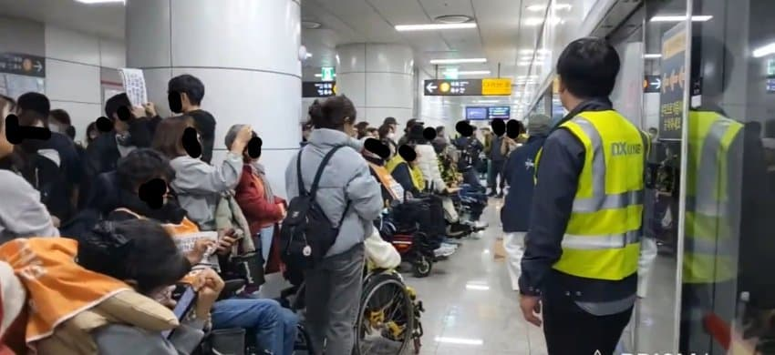
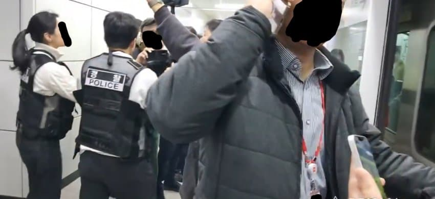
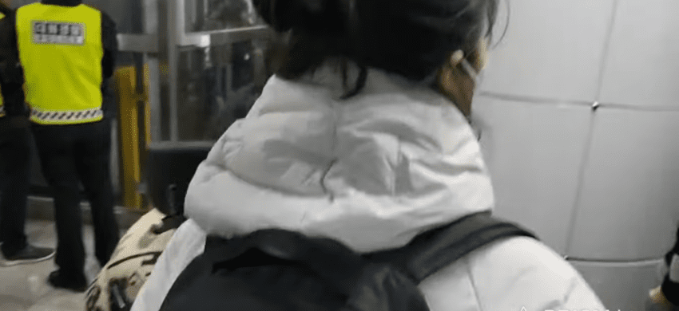
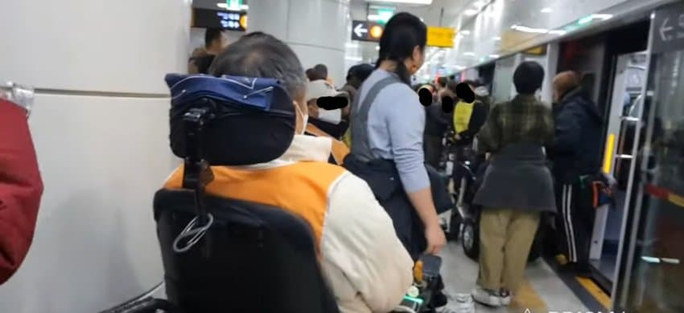
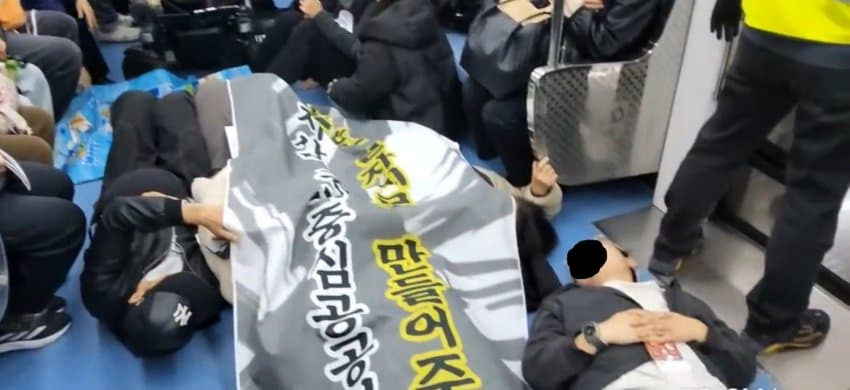
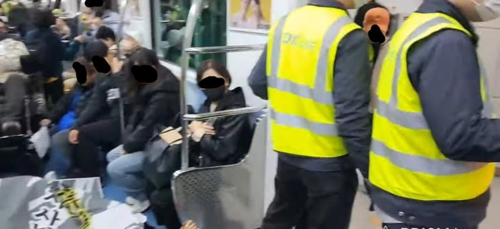
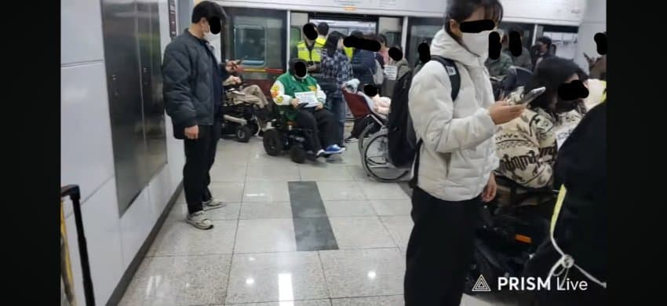

오늘은 전장연이 좀처럼 나타나지 않았던 신분당선에서 전장연 시위가 일어난 날이다. 시위 구간은 신사~광교중앙으로 신분당선에서 보기 드문 전장연 시위 공지다.

시위 현장에는 형광조끼를 입은 네오트랜스 직원과 셔츠 차림의 관리자가 배치됐으며,


경력으로는 경찰과 대화경찰이 배치됐다. 신분당선도 엄연히 국가철도이기에 국토교통부 철도경찰이 배치됐어야 했지만 그 모습을 찾아볼 수 없었다.
열차가 들어오고 초유의 신분당선 전장연 시위가 시작됐다.

전장연이 꾸물꾸물거리며 신분당선에 탑승하던 도중 역무원의 발차전호가 내려지고,
자동운전인 신분당선은 전장연이 타든 말든 쿨하게 출입문을 닫는다. 중간에 전장연 시위 안내방송이 나오는데 아직 네오트랜스는 서울교통공사와 코레일과 달리 전장연에 많이 시달리지 않아서 그런지 그 단체의 풀네임을 불러줬다.
전장연이 잡고 있던 1개의 출입문은 네오트랜스 직원과 관리자가 중간에 잘라서 처리한 뒤 열차가 발차했다.
그나저나 이 경찰관 유니폼은 등짝에 태극기가 수직으로 박힌 게 꽤 느낌있다.

그러나 후속열차가 전장연의 침대열차가 되는 것을 막을 수는 없었다.

전장연이 드러누운 칸은 출입문 하나당 네오트랜스 직원 2명이 붙어 승차를 통제했다.

전장연 시위대의 목적지인 광교중앙역에 도착. 광교중앙역은 부본선이 있는데 관제가 혹시 모를 전장연의 돌발행동에 대비해 부본선으로 전장연 피폭열차를 빼 두었다.
이례적인 신분당선 시위를 끝낸 전장연은 이날의 최종 목적지인 경기도청 본청으로 향했다.
댓글
수집 당시 댓글 35개
삼부자곰 · 11.09 21:27:26
3287 · 11.10 11:22:34
땨뗘(봇) · 11.10 19:30:07
ㅇㅇ · 11.10 19:31:48
· ㅇㅇ · 11.10 19:35:09
샨테 · 11.10 19:31:50
· 프븨 · 11.10 19:34:34
· 프븨 · 11.10 19:34:46
· 샨테 · 11.10 19:36:25
· ?? · 11.10 19:40:21
ㅇㅇ · 11.10 19:32:12
· ㅇㅇ · 11.10 19:32:19
겐지혐오함 · 11.10 19:33:07
ㅇㅇ · 11.10 19:33:23
ㅇㅇ · 11.10 19:33:30
· ㅇㅇ · 11.10 19:33:45
· ㅇㅇ · 11.10 19:37:14
ㅇㅇ · 11.10 19:33:42
ㅇㅇ · 11.10 19:33:53
· ㅇㅇ · 11.10 19:39:36
ㅇㅇ · 11.10 19:34:03
· ㅇㅇ · 11.10 19:34:18
ㅇㅇ · 11.10 19:34:32
ㅇㅇ · 11.10 19:36:13
ㅇㅇ · 11.10 19:37:24
ㅇㅇ · 11.10 19:37:37
쿠트라 · 11.10 19:37:50
ㅇㅇ · 11.10 19:38:28
· ㅇㅇ · 11.10 19:38:48
ㅇㅇ · 11.10 19:38:36
ㅇㅇ · 11.10 19:38:38
ㅇㅇ · 11.10 19:38:38
· ㅇㅇ · 11.10 19:39:35
슈밤베르크 · 11.10 19:39:35
ㅇㅇ · 11.10 19:40:52